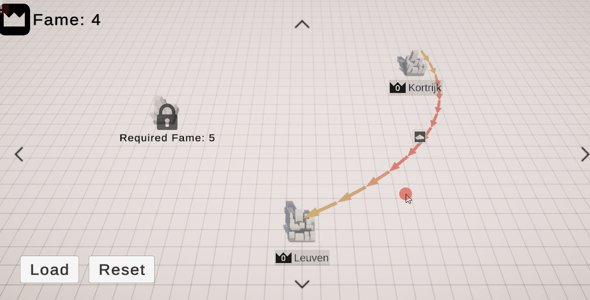
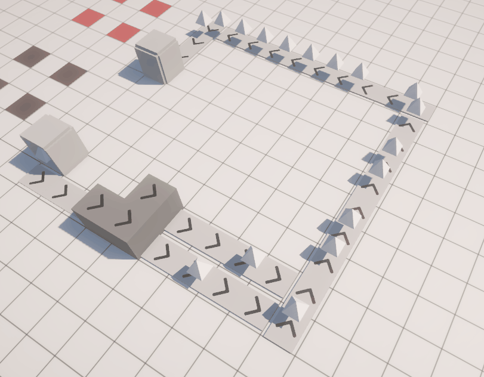
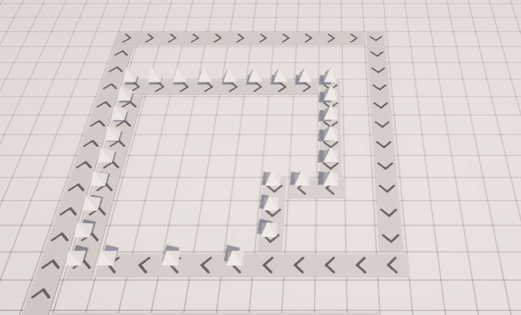

Modulus
Notes, screenshots, and small snippets from my internship at Happy Volcano.
Focus: prototyping, bug fixing and feature developement in production.
Duration: three months.
Prototype system – overview

// Example snippet
public void LoadExistingLines()
{
var resources = _worldMap.GetImportedResources(_cityData.GuidStr);
Transform endPointTrans = _cityTransform;
for (int j = 0; j < resources.Count; ++j)
{
for (int k=0; k < resources[j].ResourceTypes.Count; ++k)
{
var exportCityUI=_worldMapUI.GetCityUI(resources[j].FromCityGuid);
Transform startPointTrans=exportCityUI.CityTransform;
var button=exportCityUI.GetButton(resources[j].ResourceTypes[k]);
if (button) button.IsExporting=true;
_exportLineVisuals.CreateLine(startPointTrans, button, resources[j].FromCityGuid);
_exportLineVisuals.PlaceLineEndpoint(endPointTrans, _cityData.GuidStr);
}
}
}
Time: a week
Save System: Before adding world map features, we built a saving system using Scriptable Objects. However, since SOs reset when loading unrelated scenes, we created a persistent manager to keep key SOs alive throughout the game.
Unlocking Levels: Implemented easily with the new saving system by storing a simple Boolean to check if a level should unlock when an event triggers.
Rendering Arcs: To visually connect levels, we used Unity’s Line Renderer and modified it to draw arcs using three transforms — start, end, and center.
Placing Arcs: Arcs are activated via a button in the hover info menu. After adjusting the menu logic, arcs now start at one level icon and follow the mouse until another level is selected.
Saving Arc Data: Arc information is saved per level, ensuring lines reload correctly when returning to the world map.
Editing Arcs: Arcs can be changed or removed entirely.
Overlapping Data: When multiple arcs share the same start and end points, they merge into one arc with multiple icons. Code was simplified to better track linked data, including handling removal of individual connections.
Warehouse Prototypes
Time: a week
I had to make a prototype of a warehouse which acts as an operator in the game, together with another developer.= The operator stores modules in a container; the main challenge was linking 3D models as icons on a world-space canvas positioned relative to the building’s size.
Buildings:
Buildings draw modules from nearby warehouses via a singleton manager (implemented as a Scriptable Object). Warehouses register themselves for easy access.
I assisted with building placement, using my experience with operators and the diorama tool.
I handled most of the visuals, including icons with progress bars showing required modules and retrieval time.
To improve feedback, I added drones to visually represent module transport from warehouses.


Gallery


